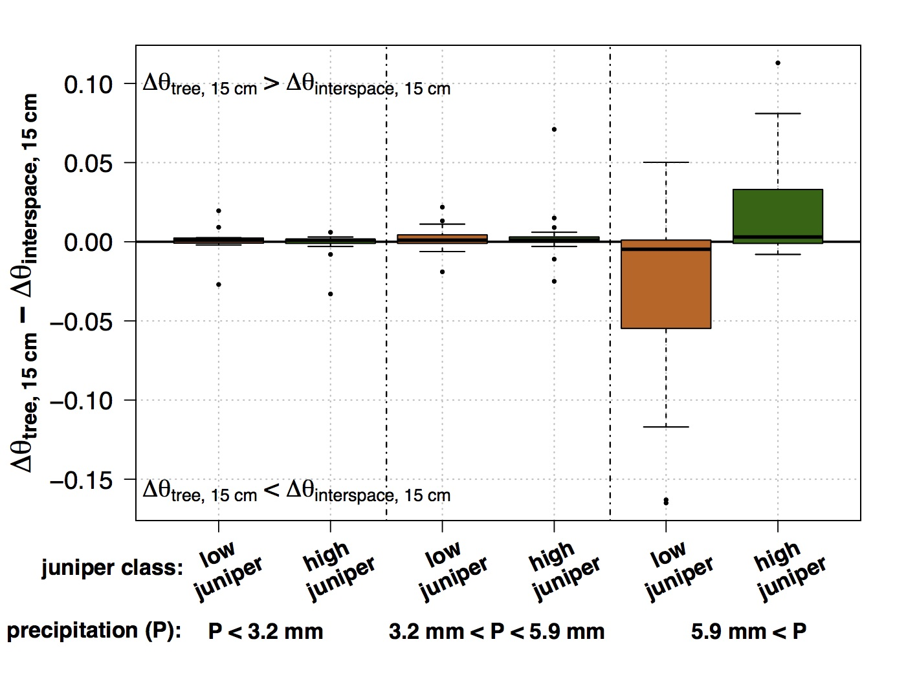

Shallow Soil Moisture
Soil moisture is important for determining ecosystem processes as well as potential for streamflow and water yield in semi-arid systems. Soil moisture is a key component in water limited systems of the western U.S. (Loik et al., 2004; Schwinning and Sala, 2004).
Soil Moisture Timing
Soil moisture dynamics between under the tree and outside the canopy vary between studies. Young et al. (1984) during two years of collection found that soil moisture below junipers at 7.5 cm depth depleted faster in open area compared to canopy edge, and then halfway along canopy radius, and lastly at tree base. The open area, canopy edge, and halfway along canopy radius all reached wilting point (-1.5 MPa) by early summer, but the tree base did not reach wilting point even into midsummer (-0.5 MPa). Breshears et al. (1997) observed soil moisture depletion to be the same rate in open areas as under juniper canopies.
In our study at RCEW, soil moisture dry down timing at 15 cm depth was similar in the interspace as under the canopy. The day half the soil moisture dry down had occured was May 22nd and May 27th for the canopy and interspace respectively. However, at 60 cm the interspace (brown) dries out sooner than under the tree canopy (green). The day half the 60 cm soil moisture dry down occured in the canopy and interspace was July 14th and June 22nd.
figure caption: This figure contains A) snow depth and precipitation pe 990 r day, volumetric water content at 15 cm (θ15) and 60 (θ60) cm soil depth measured at under the canopy and in the interspace at two trees in the B) low density juniper and C) high density juniper. These θ data are an average for both trees in each density area. Red (orange) arrows indicate when EMI (ERT) surveys occurred.
Difference in Soil Moisture Dynamics between Juniper Density
When we do a storm by storm analysis, we found an intersting difference in soil moisture dynamics between junipers in high density juniper areas and junipers in low density areas. In the figure below, we subtracted the change in soil moisture at 15 cm in the tree and interspace. For larger rain storms (larger than 5.9 mm), in the low density juniper, the interspace soil moisture increased more than under the trees, whereas the opposite was true in high density juniper areas - the soil under the tree increased more than the interspace. The only difference between the low and high density juniper is the interspace in the low density juniper have a higher density of sagebrush. So when there are more sagebrush present in the interspace, more water infiltrates in the interspace when compared to under the junipers.

figure caption: Difference in the change in volumetric water content at 15 cm (Δθ15) between tree and interspace after a single rain event. Paired tree and interspace θ15 measurements are at the same tree. Tertiles of total event precipitation plotted on the x-axis. For events with values above y = 0, increase in θ15 was greater under the tree. Events with values below y = 0, increase in θ15 was greater in the interspace. Green (brown) boxplots indicate high juniper/low sagebrush (low juniper/high sagebrush) plot areas, respectively. A non-parametric ANOVA revealed that for precipitation events larger than 1.8 mm, low and high juniper are statistically different.
Information on this page is based on this publication, where you can find more detailed information about this study.